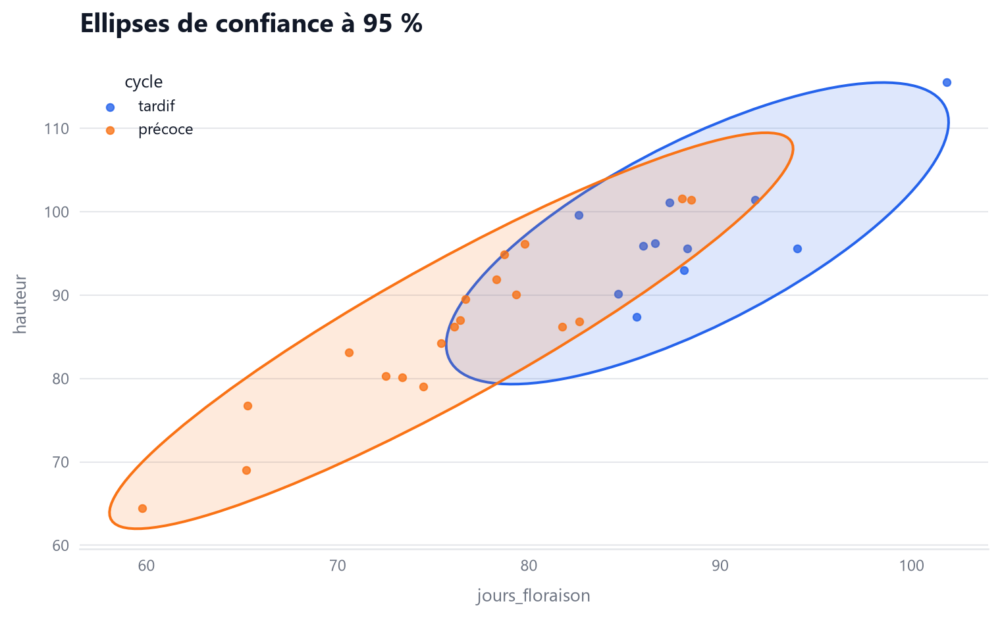
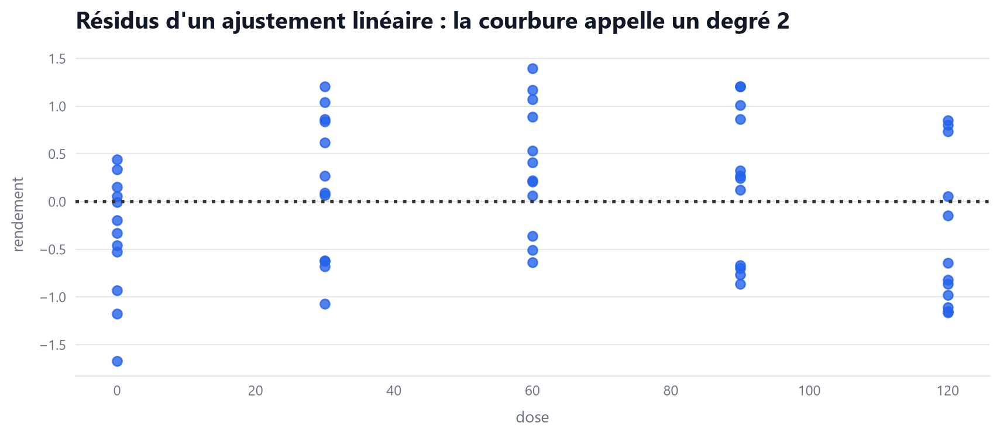
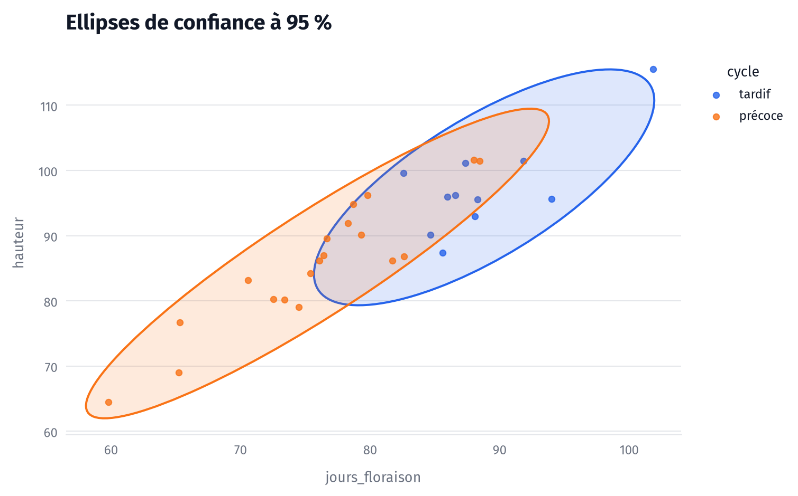

Ajustement polynomial avec bande de confiance à 95 %, équation et R² (et p-value pour un ajustement linéaire). Les résultats sont aussi disponibles dans chart.regression_stats.
(Chart(essai, figsize=(9, 4.5)) .regression('dose', 'rendement', order=2) .title("Courbe de réponse à l'azote") .labels(xlabel='Dose N (kg/ha)', ylabel='Rendement (t/ha)') .tight_layout() .show())

Réponse du rendement à la fertilisation azotée
residplot — Résidus d’une régression
Résidus d’une régression polynomiale en fonction de x : ils doivent se répartir sans structure autour de zéro.
Quand l’utiliser. Vérifier un ajustement : une forme (courbe, entonnoir) dans les résidus signale un modèle inadapté ou une variance non constante.
Données attendues : un DataFrame, une ligne par observation.
Colonne (exemple)
Type
Rôle
Exemple de valeur
dose
nombre
x
90
rendement
nombre
y
5.2
Paramètres
Paramètre
Défaut
Description
x
obligatoire
Colonne de l’axe horizontal.
y
obligatoire
Colonne de l’axe vertical.
order
1
Degré du polynôme ajusté avant de calculer les résidus.
**kwargs
—
Options supplémentaires transmises à la fonction sous-jacente (seaborn ou matplotlib).
Exemple
Des résidus sans structure valident le modèle ; une courbe signale un mauvais degré.
(Chart(essai, figsize=(9, 4)) .residplot('dose', 'rendement', order=1) .title("Résidus d'un ajustement linéaire : la courbure appelle un degré 2") .tight_layout() .show())

confidence_ellipse — Ellipses de confiance
Nuage de points avec une ellipse de confiance par groupe, qui couvre une proportion donnée de la population (loi normale à deux dimensions).
Quand l’utiliser. Comparer la position et la dispersion de groupes dans un plan (variétés, espèces, traitements), par exemple sur les axes d’une ACP.
Données attendues : un DataFrame, une ligne par individu.
Colonne (exemple)
Type
Rôle
Exemple de valeur
jours_floraison
nombre
x
92
hauteur
nombre
y
118
cycle
texte
group (optionnel) : une ellipse par groupe
Précoce
Paramètres
Paramètre
Défaut
Description
x
obligatoire
Colonne de l’axe horizontal.
y
obligatoire
Colonne de l’axe vertical.
group
None
Colonne de regroupement : une couleur (et une entrée de légende) par groupe.
level
0.95
Proportion de la population couverte par l’ellipse (0.95 = 95 %).
show_points
True
Affiche aussi les points de mesure.
fill
True
Remplit les surfaces.
alpha
0.15
Opacité, de 0 (transparent) à 1 (opaque).
Exemple
Un nuage de points avec une ellipse par groupe, couvrant 95 % de la population (loi normale bivariée ; réglable avec level).
(Chart(caracteres, figsize=(8, 5)) .confidence_ellipse('jours_floraison', 'hauteur', group='cycle') .title('Ellipses de confiance à 95 %') .tight_layout() .show())

Hauteur et date de floraison selon le cycle
hexbin — Pavage hexagonal
Pavage hexagonal : le plan est découpé en hexagones colorés selon le nombre de points qu’ils contiennent.
Quand l’utiliser. Relation entre deux variables pour des milliers de points, quand un nuage de points devient une tache.
Données attendues : un DataFrame, une ligne par observation.
Colonne (exemple)
Type
Rôle
Exemple de valeur
age
nombre
x
42
revenu
nombre
y
31500
Paramètres
Paramètre
Défaut
Description
x
obligatoire
Colonne pour les valeurs de l’axe x.
y
obligatoire
Colonne pour les valeurs de l’axe y.
gridsize
30
Nombre d’hexagones dans la direction x.
cmap
None
Colormap pour l’encodage du compte.
mincnt
1
Compte minimum pour afficher un hexagone (masque les cases vides).